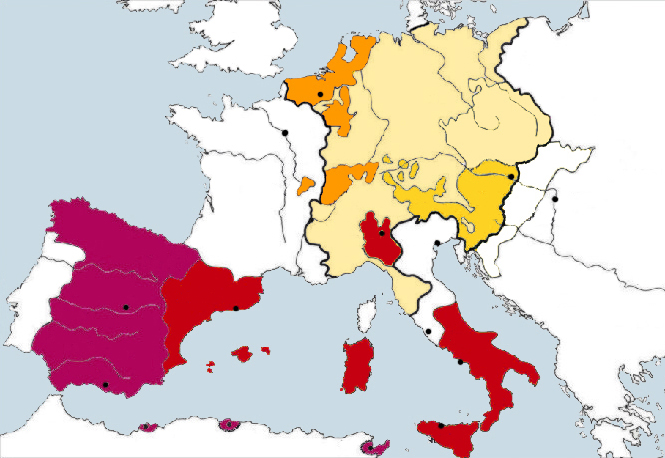

『ヴァロワ朝 フランス王朝史2』
公開日：
")
- 作者: 佐藤賢一
- 出版社/メーカー: 講談社
- 発売日: 2014/09/18
- メディア: 新書
- この商品を含むブログ (4件) を見る
『カペー朝 フランス王朝史１』 - だるろぐ の続き。比較的順調に王位を継承していたカペー家が急転直下の断絶。カペー家の支流にあたるヴァロワ家が諸侯の推戴を受けて王位を継承する。のちにフランス革命で処刑されるルイ16世が「市民ルイ・カペー」と呼ばれたように、カロリング朝のあとのフランス王家はみなカペー家の流れを汲んでおり、この王朝をカペー朝と区別してとくにヴァロワ朝と呼ぶ意味もないように思うが、なにぶんカペー家の流れを汲む王家が長く続いたこともあり、歴史的にはここでぶった切っておいた方が便利ということらしい。
かいつまんで言うと、「個人商店としては大きくなりすぎたカペー朝のフランス王国を引き継いで、会社形態に刷新した」のがヴァロワ朝であるという。前巻では星の数ほどの侯・伯がでてきたのに対し、この巻ではむしろ公の存在が目立つ。それも多くはヴァロワの親王家で、フランスはほとんどヴァロワ王家によって握られていた。当時のフランスは、人口規模で言うとドイツとスペインを足したものと等しく、イングランドに4倍する。つまり、ドイツ皇帝とスペイン王を兼ねたハプスブルグ家のカール5世に単独で対抗できるだけの力をフランス王は備えていたことになる。

それもこれも、とくに賢王シャルル五世が国王による課税と常備軍（と高等法院に代表される司法制度）を整備したからに他ならない（一時期廃止されるけれども）。貴族と僧侶に民衆を加えた三部会を招集し、巧みに権力バランスを保ちながら、王家への協賛を募った（平たく言えば、税金をとった）。
これが先進的であることは、江戸幕府と対比してみると分かりやすいかもしれない。徳川幕府は確かに諸侯に超越しており、改易・取り潰しもやりたい放題だったかもしれないが、それでも藩の民衆に直接課税することはできなかったし、幕府単独で諸侯を圧倒する常備軍を動かすこともできなかった。まさしく、「日本の歴史に準えるならば、天下統一して江戸幕府を開いたときに、ある程度まで明治維新もやってしまった」のだ。
『双頭の鷲』でお馴染みのシャルル五世＆デュ・ゲクラン元帥のコンビや、『王妃の離婚』のルイ12世と王妃ジャンヌなどもでてくるので、それらの話の背景を知っておきたい人にもお勧めだし、この本からそっちの本に入ってもいいと思う。
")
- 作者: 佐藤賢一
- 出版社/メーカー: 新潮社
- 発売日: 2001/06/28
- メディア: 文庫
- 購入: 10人 クリック: 167回
- この商品を含むブログ (21件) を見る
")
- 作者: 佐藤賢一
- 出版社/メーカー: 集英社
- 発売日: 2013/07/25
- メディア: Kindle版
- この商品を含むブログを見る